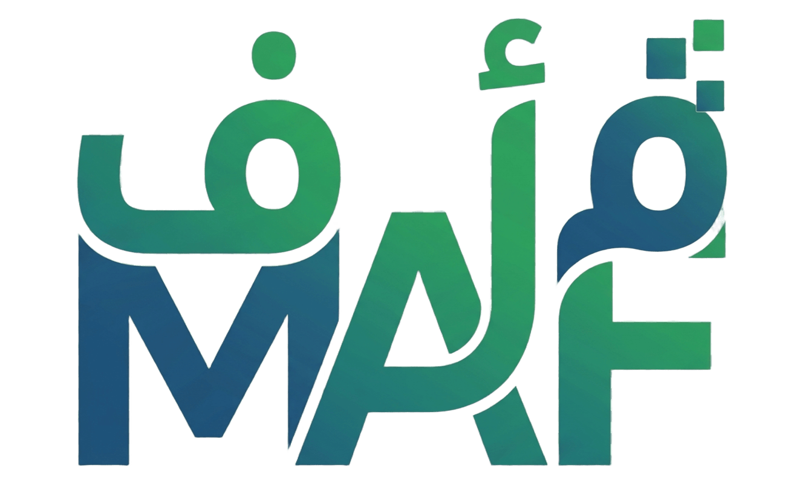
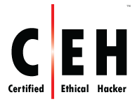

"حيث تلتقي الخبرة البشرية بالدقة الرقمية"

لماذا MAF Tech ؟
اكتشاف قدراتك وتحديد التخصص السيبراني الأنسب لك في وقت مبكر يختصر عليك الكثير من الجهد والمال. ولكن نسبة كبيرة من المهتمين يواجهون تحدياً حقيقياً في تحديد المسار الصحيح (هجومي، دفاعي، أو حوكمة). منصتنا تسهل عليك هذا التحدي من خلال 'الاختبار التحليلي'؛ الأداة الذكية التي تربط مهاراتك بالشهادات المعتمدة والمتوافقة مع متطلبات سوق العمل السعودي.
الطلاب والمبتدئون
اكتشف شغفك، وتعرف على الفرص المتاحة في سوق الأمن السيبراني لاختيار مسارك بخطى واثقة.
المحترفون والموظفون
قيّم مستواك الحالي واكتشف الشهادات المتقدمة التي سترتقي بمسيرتك المهنية وتضاعف فرصك.
الخبراء والمدربون
شارك خبرتك هـنـا وكن مدرباً، وساهم في بناء وتوجيه جيل من المحترفين السعوديين في الأمن السيبراني.
المسارات والعمليات السيبرانية
العمليات الهجومية
محاكاة الهجمات واختبار الاختراق لاكتشاف الثغرات قبل المستغلين.
العمليات الدفاعية
كشف التهديدات، الاستجابة للحوادث، وحماية البنية التحتية الرقمية.
الحوكمة والامتثال
إدارة المخاطر، الامتثال للضوابط (NCA)، ووضع السياسات الأمنية.
واقع الأمن السيبراني اليوم
0%
تم تقييم 3% فقط من المؤسسات عالمياً بأنها تمتلك جاهزية "ناضجة" لمواجهة الهجمات السيبرانية الحديثة.
0 مليون
يواجه العالم فجوة ونقصاً يقدر بـ 4.8 مليون محترف في مجال الأمن السيبراني.
0%
74% من خبراء الأمن السيبراني يؤكدون أن مشهد التهديدات اليوم هو الأشرس منذ 5 سنوات.
لماذا هذا الاختبار؟
مصمم خصيصاً للمواطن الطموح
متوافق مع أحدث التوجهات
إنهاء حيرة البدايات
خطة عمل واقعية
الأسئلة الشائعة
هل الاختبار مجاني بالكامل؟
نعم، اختبار تحديد المسار المهني مجاني تماماً، وهو مصمم لمساعدتك في اكتشاف شغفك التقني وتوجيهك نحو الشهادات المناسبة دون أي رسوم.
هل أحتاج خلفية تقنية سابقة؟
ليس بالضرورة؛ الاختبار يقيس ميولك الشخصية وطريقة تفكيرك في حل المشكلات، مما يساعدنا على تحديد ما إذا كنت تميل للمسار الهجومي، الدفاعي، أو الإداري (GRC) حتى لو كنت مبتدئاً.
كم يستغرق الاختبار؟
يستغرق الاختبار قرابة 5 إلى 10 دقائق فقط، ويتكون من 8 أسئلة تركز على سيناريوهات واقعية في بيئة العمل السيبراني.
هل الشهادات المقترحة معترف بها دولياً؟
بكل تأكيد؛ جميع الشهادات الموجودة في الدليل (مثل OSCP, CISA, Security+) هي شهادات صادرة من جهات عالمية مرموقة مثل CompTIA وISACA وOffSec، وهي المعيار الذهبي في سوق العمل.
ما هو المسار الأكثر طلباً في السعودية حالياً؟
وفقاً لمتطلبات "هيئة الأمن السيبراني" وسوق العمل السعودي، فإن مسار الحوكمة والامتثال (GRC) ومسار العمليات الدفاعية (SOC) يشهدان طلباً مرتفعاً جداً بسبب التوجه الوطني نحو التحول الرقمي الآمن.
هل تغني الشهادات المهنية عن الشهادة الجامعية؟
الشهادات المهنية تعزز من فرصك بشكل كبير وتثبت كفاءتك العملية، لكن في سوق العمل السعودي، يعتبر الجمع بين الشهادة الجامعية والشهادات المهنية هو "المفتاح الذهبي" للوصول لأفضل المناصب.
هل يوفر الموقع دورات تدريبية؟
موقعنا يعمل حالياً كمرشد ومستشار ذكي يوجهك لأفضل الشهادات والمصادر العالمية؛ ونعمل مستقبلاً على توفير مسارات تدريبية متكاملة تحت إشراف مدربين معتمدين.
كيف يتم تحديث بيانات المسارات؟
يتم تحديث البيانات بشكل دوري بناءً على المتغيرات في محتوى الاختبارات العالمية وتغيرات الأسعار، مع مراعاة تحليل احتياجات السوق السعودي بشكل خاص.
هل يوجد فرق في الرواتب بين المسارات؟
الرواتب متقاربة بشكل كبير وتعتمد على مستوى الخبرة والشهادات الاحترافية التي تحملها، إلا أن التخصصات النادرة مثل "الاستجابة للحوادث" أو "أمن السحابة" قد تحظى بمزايا إضافية.
أنا تخصصي ليس حاسب، هل يمكنني التسجيل في شهادات الامن السيبراني ؟
نعم، الأمن السيبراني مجال عابر للتخصصات. الكثير من المبدعين في هذا المجال جاءوا من خلفيات إدارية، قانونية، أو حتى لغوية، فالمهارة والشهادة الاحترافية هي الفيصل